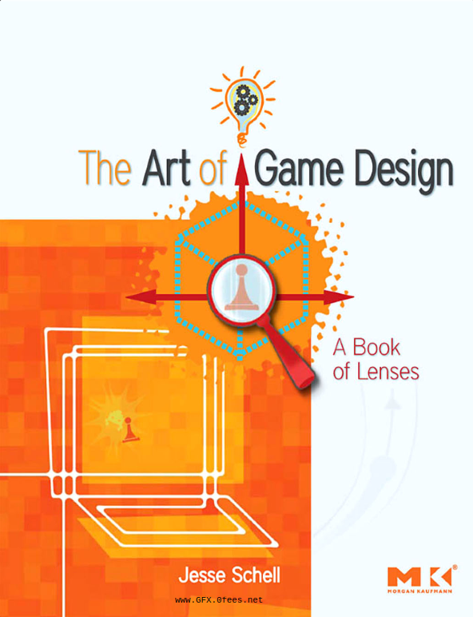
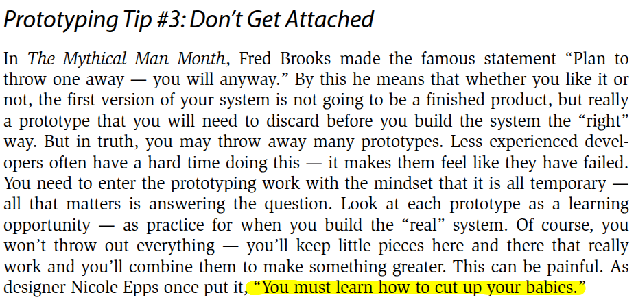

is the process of creating a simple, early version of a game to test ideas, mechanics, and concepts before full development begins
the contents of this workshop is based on

5 tips for productive prototyping
Answer a Question
Every prototype should be designed to answer a clear questionHow many animated characters can our technology support in a scene?Do our characters and settings fit together well aesthetically?How large does a level of this game need to be?Is our core gameplay fun? Does it stay fun for a long time?
deck.artofgamedesign.com
Forget Quality
all that matters is whether it answers the questionThe faster you build the prototype that answers your question, the better, despite how ugly it may look
Don't Get Attached
it is all temporary
killyourdarlings

It Doesn't Have to be Digital
paper prototype
Build the Toy First
"A ball is a toy, but baseball is a game"
Game Maker's Toolkit
Design Doc
now for the moment you've all been waiting for